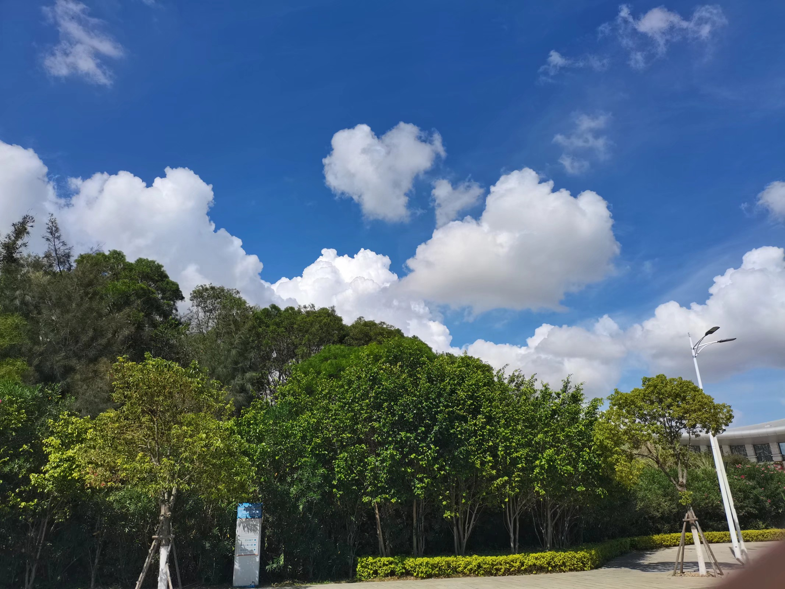
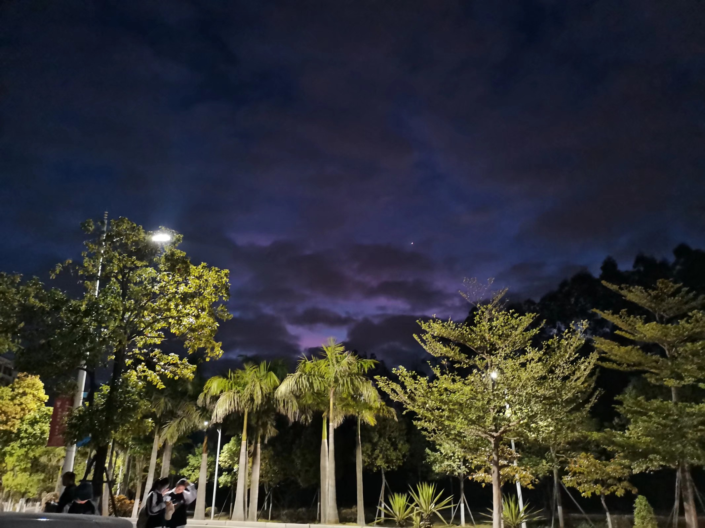
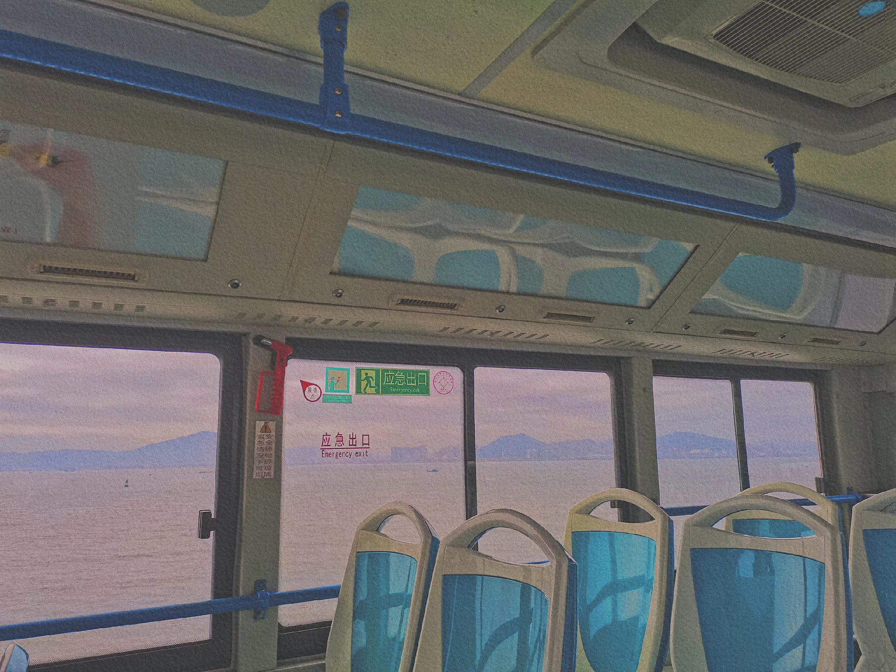
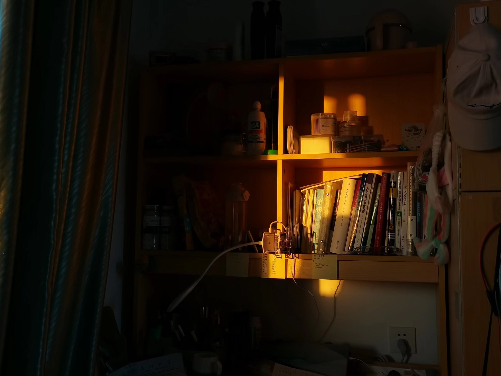

这是我们刚进入大学时的军训，那时候我们只需流汗，其他无需多想，不用管学习任务，不用管工作事务，现在想来，那时候是真的轻松。
在某次回宿舍的路上拍到的风景，有一说一，厦门的天是真的好看！
万万没想到上了大学竟会在七点之前起床，还是凌晨四点，但那时的天真的很梦幻。
在和舍友们出去玩的公交车上拍下的，很惬意，很有感觉。
在某次午睡醒来后（虽然醒的有点晚）拉开床帘就看到了洒在书桌上的柔光，那时外面有很好看的晚霞。
虽然都说我们是假的厦大人，我们上的是翔村大学，但其实仔细观察，我们的校园也是很美的，但最美的其实是身边人......